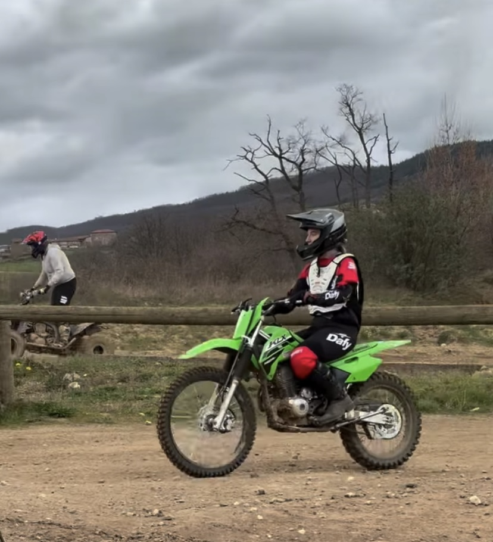

Elle vient de la filière équiné (monitrice d'équitation) suite à un accident la mettant inapte à ce travail, elle souhaite se rediriger dans les métiers du web. à ce jour elle est rentrée à la formation la TOILE (EM Business school Lyon).
Cela lui permets de découvrir les métiers du web afin de s'orienter en formation adulte master 1
Après la toile elle souhaite intégrer une alternance dans le domaine UX/UI afin de devenir cheffe de projet.
